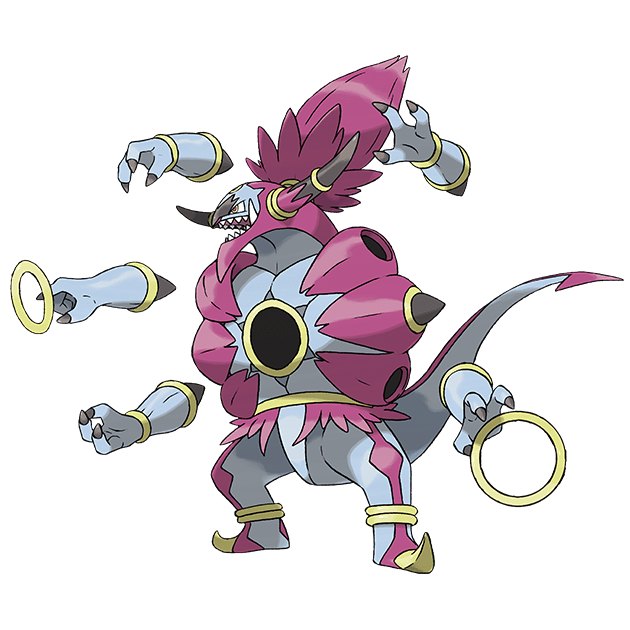

Hoopa เป็นโปเกม่อนในตำนานที่มีความสามารถพิเศษในการเปิดประตูมิติและเคลื่อนย้ายสิ่งของผ่านวงแหวนของมันได้ โดย Hoopa มีสองร่างคือ Hoopa Confined ซึ่งเป็นร่างที่มีรูปร่างเล็ก และ Hoopa Unbound ที่เป็นร่างที่มีพลังมหาศาล มีลักษณะคล้ายปีศาจและมีขนาดใหญ่กว่ามาก
ในร่าง Confined, Hoopa เป็นโปเกม่อนที่มีนิสัยซุกซน รักการแกล้งและสร้างความสนุกสนาน แต่ในร่าง Unbound, มันกลับกลายเป็นโปเกม่อนที่น่ากลัวและมีพลังทำลายล้างสูง สามารถควบคุมพลังจากมิติต่างๆ และใช้วงแหวนขนาดใหญ่ในการเคลื่อนย้ายหรือควบคุมสิ่งของต่างๆ ได้อย่างง่ายดาย ถือเป็นโปเกม่อนที่อันตรายหากไม่สามารถควบคุมพลังของมันได้
